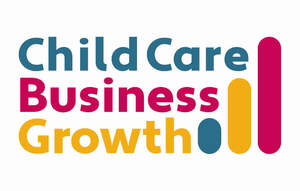

Trade Mark Journal No.2025/041 10 October 2025
UK00004229914 5 July 2025 (35,41,42)

- Class 35
- Business consultancy and advisory services relating to childcare providers; marketing consultancy and strategy services in the field of childcare business; development and implementation of advertising and promotional campaigns for childcare businesses; social media marketing and management services for childcare providers; organization and management of client acquisition programes and activities for childcare businesses; business management and administration services for childcare providers; staff recruitment consultancy for the childcare sector; provision of business information reports, benchmarking and analysis services to childcare professionals; lead generation services for childcare providers; organization and management of promotional events and online marketing campaigns for childcare businesses; provision of professional business referrals relating to childcare; preparation of proposals, bids and tender documents for childcare services; advisory services relating to the operation of franchises in the childcare sector. .
- Class 41
- Educational services for childcare providers; provision of training, coaching and mentoring in the field of childcare providers; conducting workshops, seminars, conferences and masterclasses for childcare professionals; online training courses and non-downloadable webinars in the field of childcare management; provision of non-downloadable digital educational materials and video content relating to childcare management; organizing and hosting live and virtual evets for professional development in the childcare sector; career development training for owners, managers and staff of childcare centres; consultancy and advisory services relating to training and education in business operations for childcare providers; presentation of keynotes speeches and educational talks at conferences and events for childcare industry; provision of certified or continuing professional development (CPD) training programmes for childcare professionals. .
- Class 42
- Design and development of websites for childcare providers; hosting of digital platforms and websites for use by childcare businesses; software as a service (Saas) featuring software for business management, marketing automation, and client acquisition in the childcare sector; platform as a service (PaaS) featuring digital tools for lead generation, staff recruitment and enrolment management for childcare centres; creation, maintenance and customization of websites and landing pages for marketing purposes in the childcare industry; providing temporary use of non-downloadable software for customer relationship management (CRM), business analytics and digital marketing in the filed of childcare services; technical support services relating to the setup and use of digital business platforms by childcare providers. .
Cre8 Marketing Solutions Ltd
Representative: Calathea IP